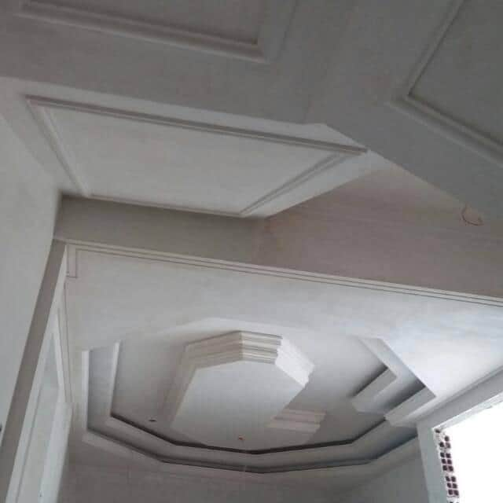
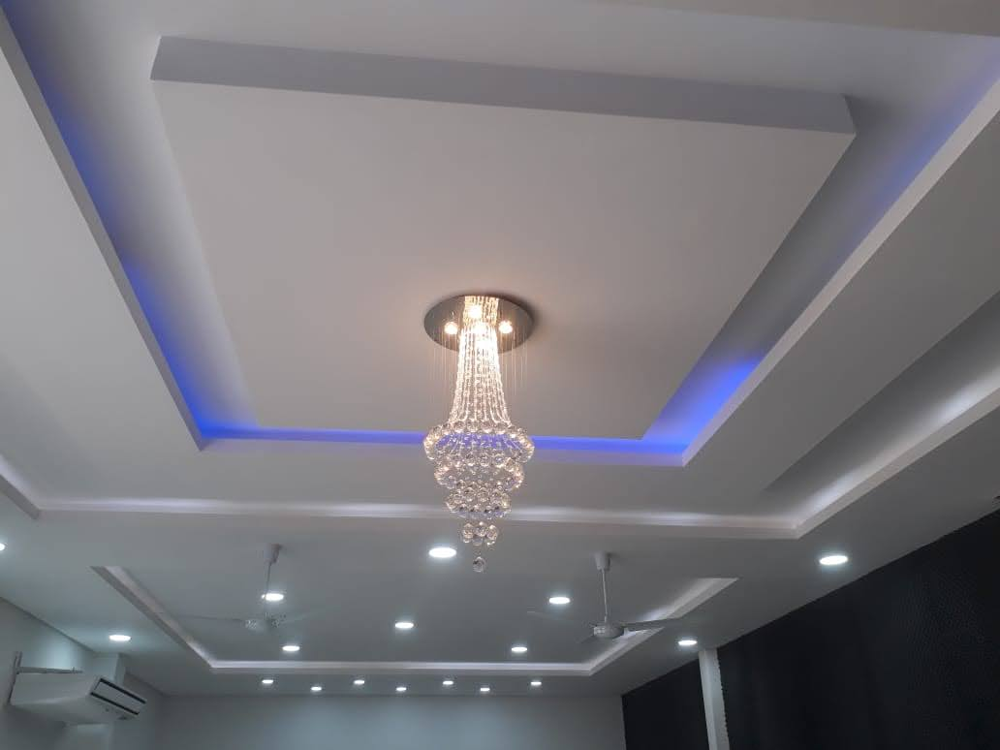
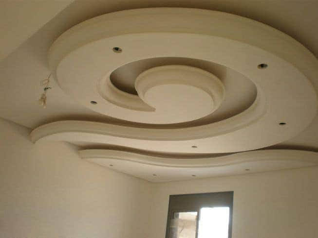
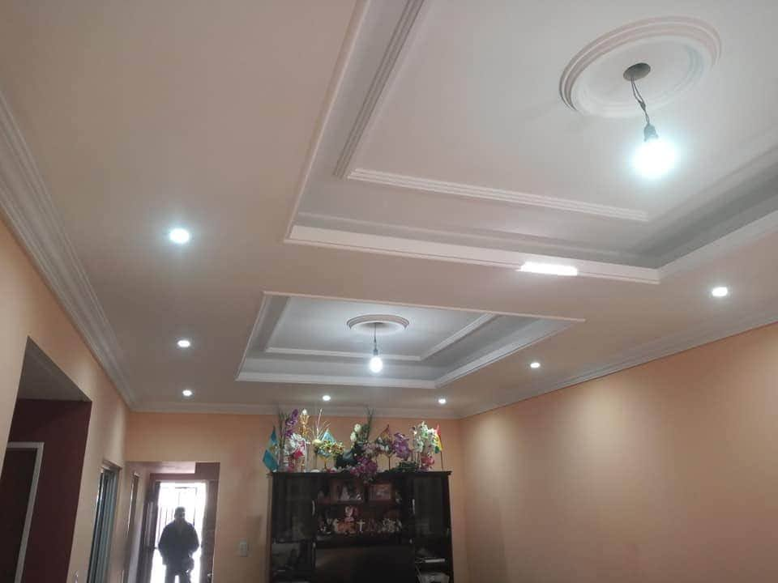
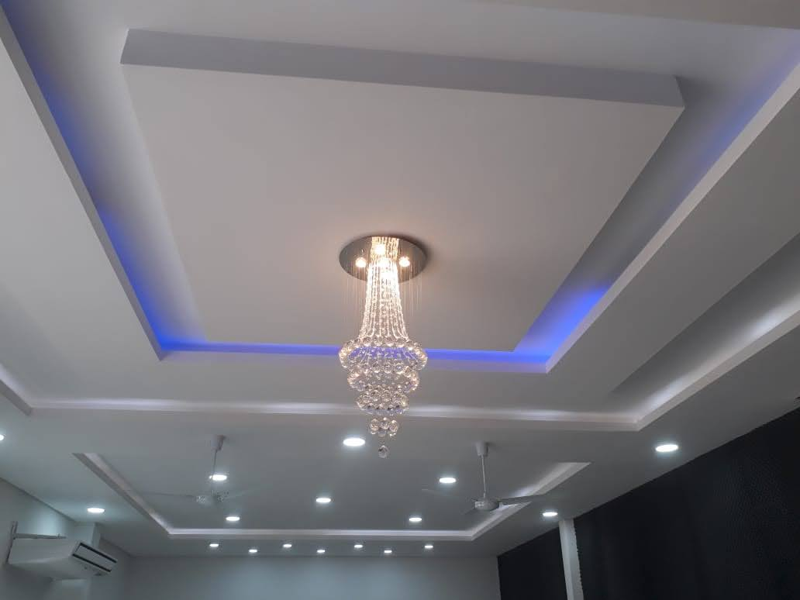
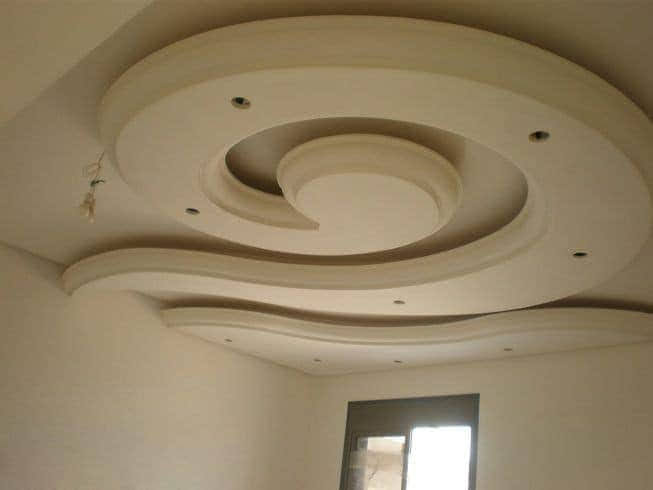
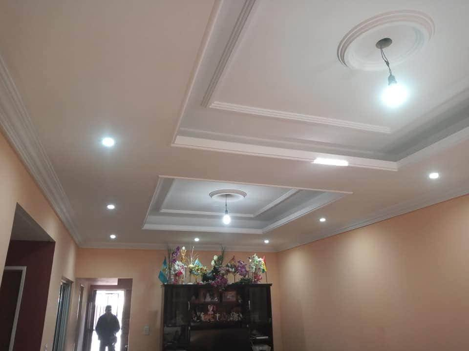
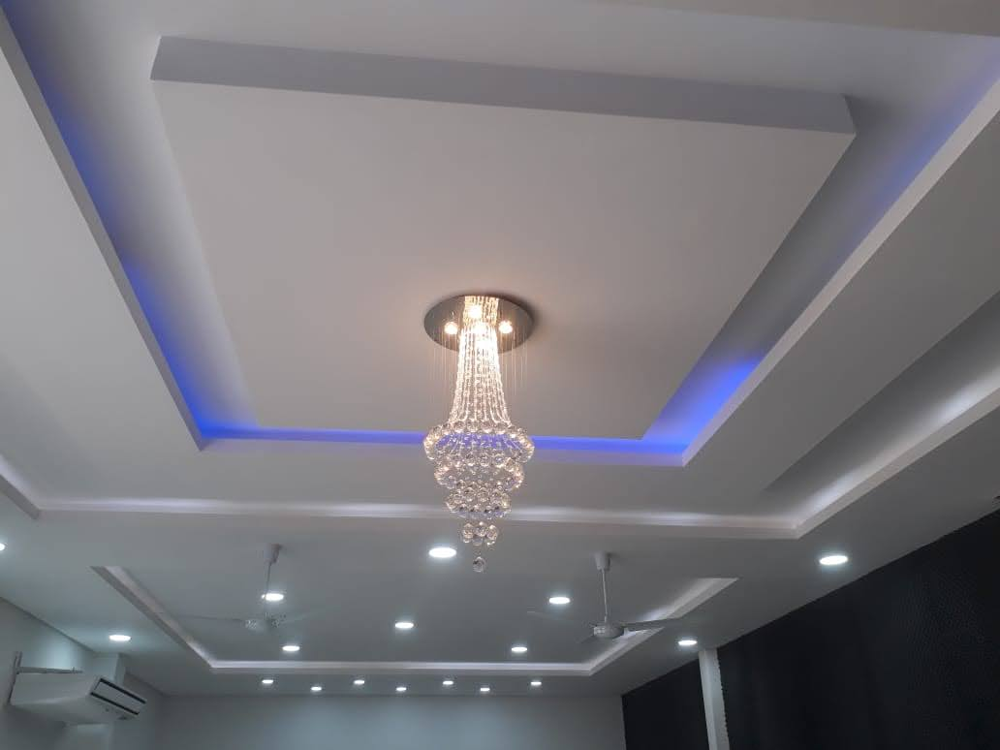
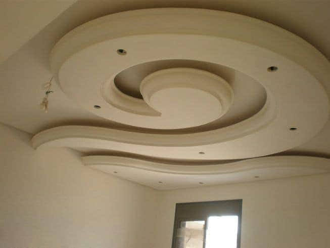
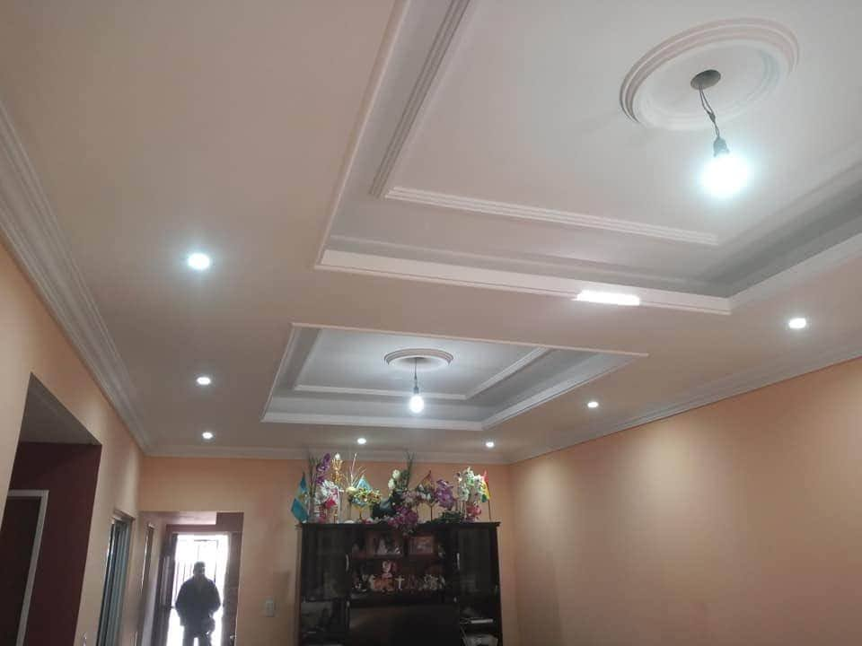

El yeso es un material de construcción versátil y ampliamente utilizado en la industria debido a sus diversas propiedades y características. Además de su capacidad para proporcionar acabados estéticos y lisos, el yeso ofrece beneficios como aislamiento térmico y acústico, regulación de la humedad, resistencia al fuego y facilidad de aplicación.
Nuestro servicio

1Proyección de Yeso
El yeso, es uno de los materiales de construcción más versátiles. Generalmente, pensamos que solo existe el yeso blanco que ya todos conocemos, pero no es así. Aquí te daremos a conocer los usos y aplicaciones del yeso en la construcción.
2Steel-Framing
Optar por la construcción en acero supone múltiples beneficios: Una mejor relación costo – beneficio, la óptima organización de obra, amplía el espectro de posibilidades creativas en la arquitectura, reduce los desperdicios, optimiza la precisión en la ejecución, etc.
3Wood-Framing
La madera es un material natural, renovable y reciclable. En estos sentidos es la materia prima de referencia. En estética es rústica o fina. Tiene características muy versátiles a la hora de construir.
Galería


 







